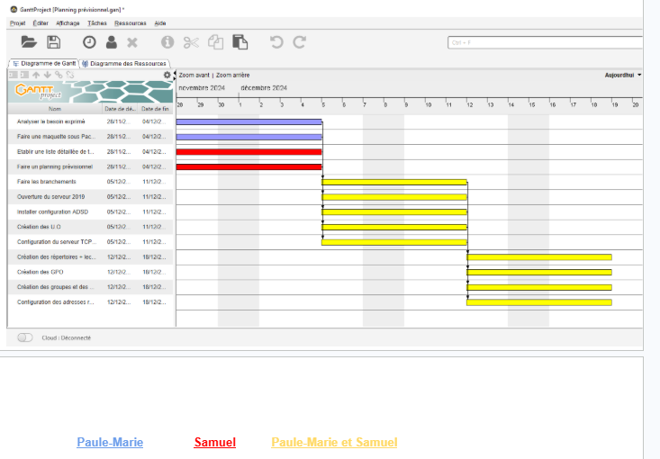
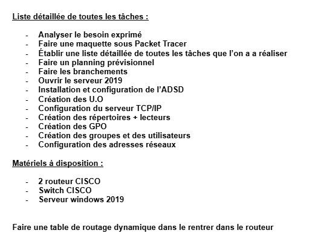
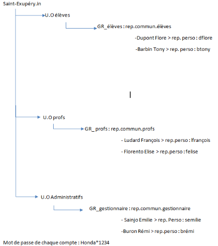

AP 1.1 · Novembre – Décembre 2024 · Collège Saint-Exupéry de Cholet
Dans le cadre de l'AP 1.1 de première année de BTS SIO, nous avons travaillé en binôme (Samuel AUBRON et Paule-Marie BATSOTSA) sur un scénario professionnel simulé : nous intervenons en tant qu'informaticiens au Collège Saint-Exupéry de Cholet.
Le réseau du collège est composé de deux réseaux interconnectés par un routeur — le service administratif et le service pédagogique (élèves et professeurs). Face à une augmentation importante du nombre de postes à venir, l'ensemble du parc doit être migré d'un adressage statique vers un adressage dynamique, et les comptes utilisateurs doivent être organisés via Active Directory.
J'ai pris en charge la phase de planification et de modélisation : planning prévisionnel, liste des tâches et du matériel, arborescence Active Directory. Puis Paule-Marie et moi avons réalisé ensemble la configuration sur les machines physiques.

Réalisation du diagramme de Gantt sous GanttProject avec répartition des tâches et jalons sur les séances de novembre et décembre 2024.

Établissement de la liste détaillée de toutes les tâches à réaliser et du matériel disponible (2 routeurs Cisco, switch Cisco, serveur Windows 2019).

Conception de l'arborescence Active Directory du domaine Saint-Exupéry.in : 3 OU (Élèves, Profs, Administratifs), groupes, répertoires partagés et personnels, et comptes utilisateurs avec mots de passe. Réalisée avant la configuration sur le serveur Windows 2019.